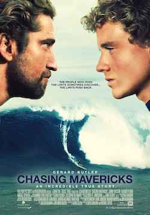

This movie teaches that, even in difficult situation we can change our life(future) through postitve thinking and Confidence.

# This is the real story of surff champ Mr.Jay Moriarity.
# It's motivating to move towards success in our passion or Proffessional life.
1.This series is more Inspiring and motivating to do what you wand to do in your life.
2.And how to handel the situations,relationships,challengs etc,.